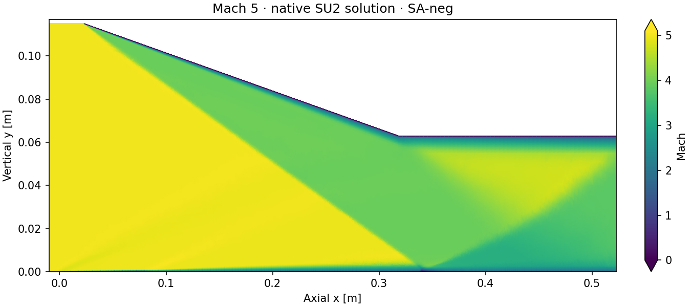

Mach 2.05 · Stanford PIV + published SU2
The ceiling ramp
A 3 mm ceiling ramp sends a shock into a low-aspect-ratio duct. Compare two turbulence models at the same measured coordinates.
A supersonic flow atlas
Explore three wind-tunnel cases. Follow the measurements from shock and boundary-layer interaction to the comparisons that change with the metric you choose.
Compare two Mach 5 flow fields ↗
Mach 2.05 · Stanford PIV + published SU2
A 3 mm ceiling ramp sends a shock into a low-aspect-ratio duct. Compare two turbulence models at the same measured coordinates.
Mach 2.5 · NASA PIV + published RANS
A 16° half-angle cone generates a shock in NASA’s circular test section. Move a fixed-width radial window and watch the model preference change.
Mach 3 · NASA PIV measurements
NASA measured a second 16° cone configuration at two nominal diameter Reynolds numbers. Compare velocity means across matched probe stations.